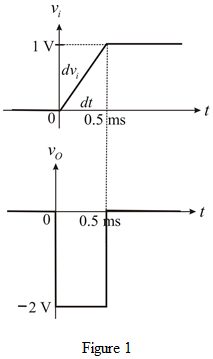

Refer to op-amp differentiator with 1 ms time constant driven by the rate controlled step in Figure P2.89 in the textbook.
And,
Calculate the output voltage of differentiator for .
Therefore, the output voltage of given differentiator is,

Refer to op-amp differentiator with 1 ms time constant driven by the rate controlled step in Figure P2.89 in the textbook.
And,
Calculate the output voltage of differentiator for .
Therefore, the output voltage of given differentiator is,
The output wave form of differentiator is shown in Figure 1.
